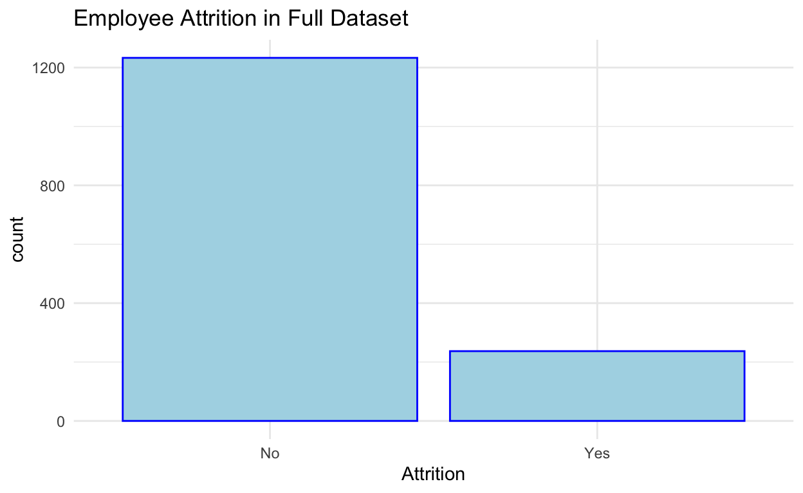
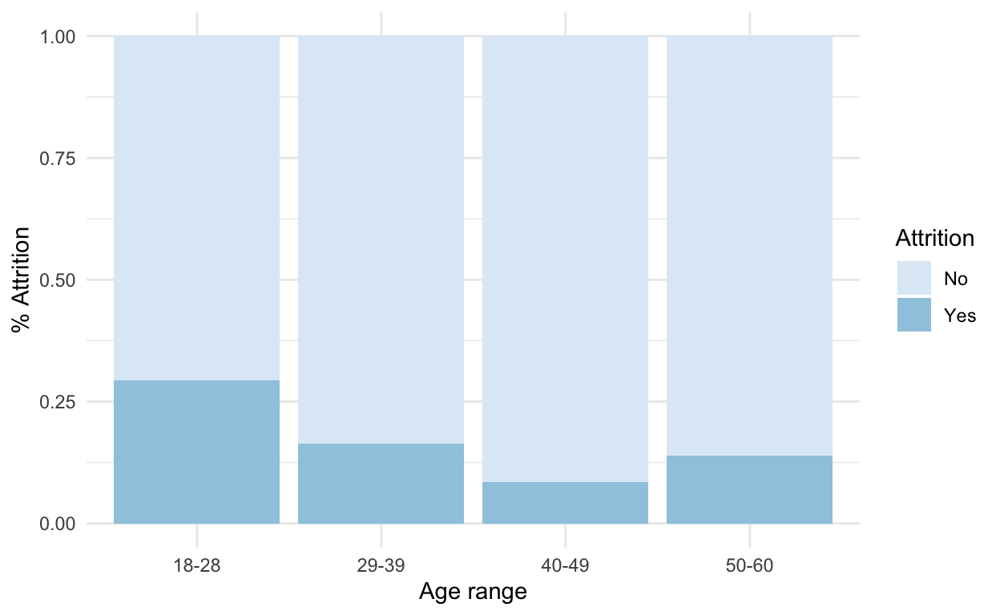
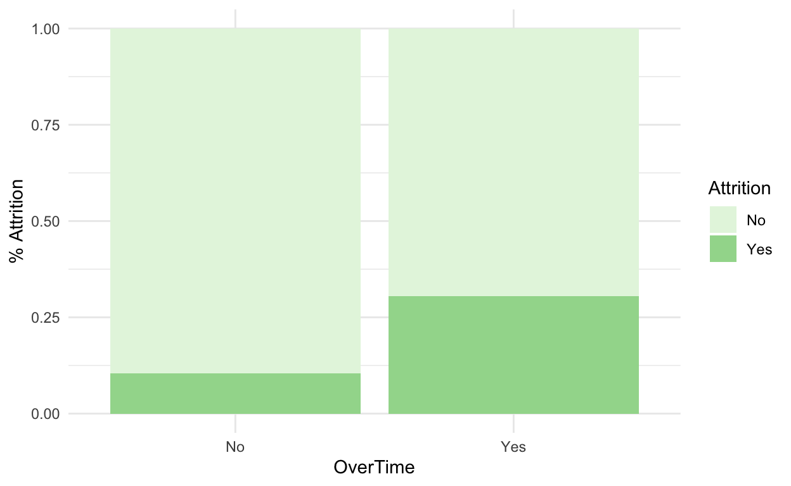
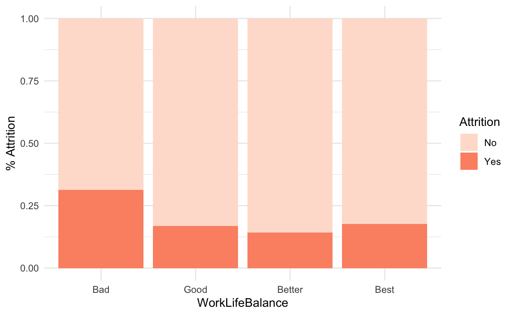
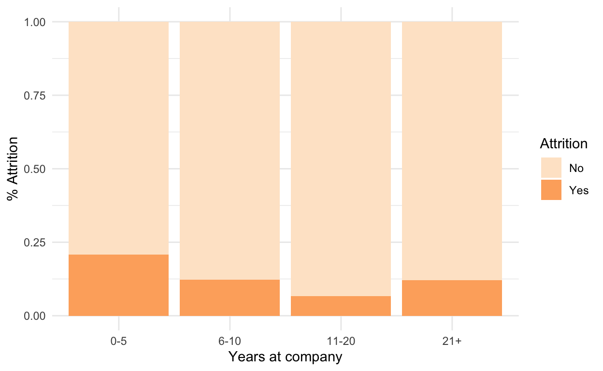
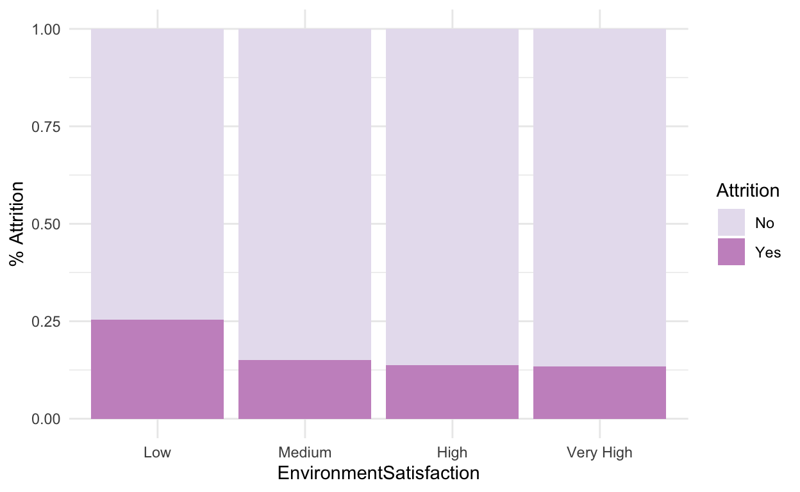
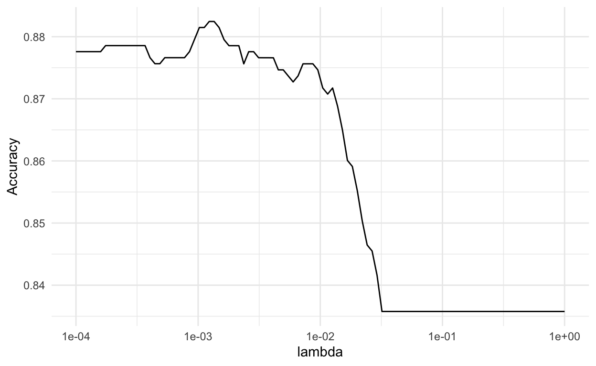

Introduction
Many people remain at their jobs for a long time, but some people inevitably end up leaving. Wouldn’t it be beneficial to be able to tell which potential (or current) employees have a higher likelihood of leaving the job without being replaced, and which are likely to stay?
This knowledge could be used by the employers for good. For example, they could see what factors influence employee attrition that can be changed to better the employee’s experience, such as whether or not the employee works overtime. It could also be used for not so good reasons, if a model predicts that a potential employee is likely to quit, and that leads to them not even being considered for the job.
We wanted to explore this more, to see if we could accurately predict whether or not an employee will leave their job. We used Kaggle’s (fictional) attrition dataset, which contains data from 1470 employees. In the original dataset, about 83.9% of employees were replaced, while 16.1% resulted in attrition. These percentages are shown in the plot below.
ggplot(data = attrition, aes(x=Attrition)) +
geom_bar(color = 'blue', fill = 'lightblue') +
ggtitle("Employee Attrition in Full Dataset")

The dataset included 35 variables:
[1] "Age" "Attrition"
[3] "BusinessTravel" "DailyRate"
[5] "Department" "DistanceFromHome"
[7] "Education" "EducationField"
[9] "EmployeeCount" "EmployeeNumber"
[11] "EnvironmentSatisfaction" "Gender"
[13] "HourlyRate" "JobInvolvement"
[15] "JobLevel" "JobRole"
[17] "JobSatisfaction" "MaritalStatus"
[19] "MonthlyIncome" "MonthlyRate"
[21] "NumCompaniesWorked" "Over18"
[23] "OverTime" "PercentSalaryHike"
[25] "PerformanceRating" "RelationshipSatisfaction"
[27] "StandardHours" "StockOptionLevel"
[29] "TotalWorkingYears" "TrainingTimesLastYear"
[31] "WorkLifeBalance" "YearsAtCompany"
[33] "YearsInCurrentRole" "YearsSinceLastPromotion"
[35] "YearsWithCurrManager" Data Cleaning
To clean the data, we recoded the levels of the WorkLifeBalance and EnvironmentSatisfaction variables to be more meaningful to the viewer, rather than just easily-misinterperable numbers. Originally these variables were coded as numbers 1-4, but we refactored them to take on their original values, e.g. “High” or “Good”.
Our hypothesis
We then tried to brainstorm what variables (out of the 35 in the attrition data) might be important predictors of whether or not an employee will quit their job. We split the data into training and testing, and created exploratory plots of some of the variables using the training dataset. A few variables that we thought would be important were OverTime, YearsAtCompany, Age, WorkLifeBalance, and EnvironmentSatisfaction. The relationships of these variables to Attrition are visualized below.





The first model we built was a logistic regression model using these variables (OverTime, YearsAtCompany, Age, WorkLifeBalance, and EnvironmentSatisfaction) that we initially suspected to have an influence on attrition rates.
1st model
set.seed(253)
attrition_mod1 <- train(
Attrition ~ OverTime + YearsAtCompany + Age + WorkLifeBalance + EnvironmentSatisfaction ,
data = attrition_train,
method = "glm",
family = "binomial",
trControl = trainControl(method = "cv", number = 5),
metric = "Accuracy",
na.action = na.omit
)
Call:
NULL
Deviance Residuals:
Min 1Q Median 3Q Max
-1.4023 -0.5910 -0.4175 -0.2728 3.3062
Coefficients:
Estimate Std. Error z value
(Intercept) 1.50312 0.52390 2.869
OverTimeYes 1.46045 0.18813 7.763
YearsAtCompany -0.05950 0.01999 -2.976
Age -0.04962 0.01094 -4.536
WorkLifeBalanceGood -0.58249 0.38613 -1.509
WorkLifeBalanceBetter -0.90099 0.36450 -2.472
WorkLifeBalanceBest -0.60660 0.44014 -1.378
EnvironmentSatisfactionMedium -1.10949 0.27721 -4.002
EnvironmentSatisfactionHigh -0.99689 0.24513 -4.067
`EnvironmentSatisfactionVery High` -1.12372 0.24923 -4.509
Pr(>|z|)
(Intercept) 0.00412 **
OverTimeYes 8.30e-15 ***
YearsAtCompany 0.00292 **
Age 5.72e-06 ***
WorkLifeBalanceGood 0.13141
WorkLifeBalanceBetter 0.01344 *
WorkLifeBalanceBest 0.16814
EnvironmentSatisfactionMedium 6.27e-05 ***
EnvironmentSatisfactionHigh 4.77e-05 ***
`EnvironmentSatisfactionVery High` 6.52e-06 ***
---
Signif. codes: 0 '***' 0.001 '**' 0.01 '*' 0.05 '.' 0.1 ' ' 1
(Dispersion parameter for binomial family taken to be 1)
Null deviance: 919.16 on 1028 degrees of freedom
Residual deviance: 787.87 on 1019 degrees of freedom
AIC: 807.87
Number of Fisher Scoring iterations: 5We can interpret the exponentiated coefficients of this model as multipliers to the odds of an employee leaving resulting in attrition. For example, the exponentiated coefficient on the OverTimeYes variable of 4.308 means that employees who worked overtime have their odds of leaving resulting in attrition multiplied by 4.308 compared to employees who did not work overtime.
Model Evaluation
To evaluate this model, we looked at the accuracy rate, as well as the sensitivity and specificty. This model had an accuracy rate of 84.9%. This appears good at first glance, but it is very close to the no information rate (the rate at which a correct guess can be made with no information) of the data, which is 83.6%. Additionally, the sensitivity is 14.2% and the specificity is 98.7%. This means that the model is mostly guessing no attrition for every case and getting the actual no attrition cases right almost all the time and the actual attrition cases wrong almost all the time. We want our model to be able to detect attrition, so this isn’t the best model for us.
Confusion Matrix and Statistics
Reference
Prediction No Yes
No 849 145
Yes 11 24
Accuracy : 0.8484
95% CI : (0.825, 0.8698)
No Information Rate : 0.8358
P-Value [Acc > NIR] : 0.1462
Kappa : 0.1896
Mcnemar's Test P-Value : <2e-16
Sensitivity : 0.14201
Specificity : 0.98721
Pos Pred Value : 0.68571
Neg Pred Value : 0.85412
Prevalence : 0.16424
Detection Rate : 0.02332
Detection Prevalence : 0.03401
Balanced Accuracy : 0.56461
'Positive' Class : Yes
# Accuracy rate of 84.9%... BUT it isn't much better than the No Information Rate (predicting these by chance) of 83.6%...
# we care more about the sensitivity, which is the percentage of correct predictions that people would leave their job out of all of the people who did end up leaving their job
# sensitivity is .13; therefore, this model does not seem very good
# CV accuracy of 84.5%
attrition_mod1$results$Accuracy
Our second model uses Logistic Regression using all variables except Over18 and StandardHours. These two variables only have one factor, so they are meaningless in our model-building.
2nd Model
set.seed(253)
# Perform logistic regression
attrition_allvars <- train(
Attrition ~ . ,
data = attrition_train %>% select(-Over18, -StandardHours),
method = "glm",
family = "binomial",
trControl = trainControl(method = "cv", number = 5),
metric = "Accuracy",
na.action = na.omit
)
summary(attrition_allvars)
Call:
NULL
Deviance Residuals:
Min 1Q Median 3Q Max
-1.6753 -0.4695 -0.2278 -0.0714 3.4297
Coefficients: (1 not defined because of singularities)
Estimate Std. Error z value
(Intercept) -1.154e+01 7.312e+02 -0.016
Age -2.164e-02 1.664e-02 -1.300
BusinessTravelTravel_Frequently 2.180e+00 5.308e-01 4.106
BusinessTravelTravel_Rarely 1.275e+00 4.993e-01 2.553
DailyRate -7.058e-04 2.801e-04 -2.520
`DepartmentResearch & Development` 1.441e+01 7.312e+02 0.020
DepartmentSales 1.234e+01 7.312e+02 0.017
DistanceFromHome 4.932e-02 1.349e-02 3.657
Education -7.538e-02 1.093e-01 -0.690
`EducationFieldLife Sciences` -1.643e+00 1.031e+00 -1.593
EducationFieldMarketing -1.399e+00 1.087e+00 -1.287
EducationFieldMedical -1.505e+00 1.039e+00 -1.448
EducationFieldOther -1.577e+00 1.115e+00 -1.415
`EducationFieldTechnical Degree` -4.602e-01 1.041e+00 -0.442
EmployeeCount NA NA NA
EmployeeNumber -2.481e-04 1.914e-04 -1.296
EnvironmentSatisfactionMedium -1.367e+00 3.427e-01 -3.989
EnvironmentSatisfactionHigh -1.241e+00 3.110e-01 -3.991
`EnvironmentSatisfactionVery High` -1.480e+00 3.140e-01 -4.714
GenderMale 5.581e-01 2.308e-01 2.418
HourlyRate 5.191e-03 5.615e-03 0.924
JobInvolvement -5.855e-01 1.518e-01 -3.856
JobLevel 2.594e-02 3.989e-01 0.065
`JobRoleHuman Resources` 1.562e+01 7.312e+02 0.021
`JobRoleLaboratory Technician` 1.256e+00 5.556e-01 2.260
JobRoleManager 7.050e-01 9.822e-01 0.718
`JobRoleManufacturing Director` -1.729e-01 6.392e-01 -0.270
`JobRoleResearch Director` -2.320e+00 1.335e+00 -1.739
`JobRoleResearch Scientist` 2.811e-01 5.734e-01 0.490
`JobRoleSales Executive` 3.118e+00 1.399e+00 2.229
`JobRoleSales Representative` 4.156e+00 1.463e+00 2.842
JobSatisfaction -3.711e-01 1.017e-01 -3.648
MaritalStatusMarried 3.528e-01 3.316e-01 1.064
MaritalStatusSingle 1.333e+00 4.317e-01 3.088
MonthlyIncome 7.089e-06 1.033e-04 0.069
MonthlyRate -5.943e-08 1.564e-05 -0.004
NumCompaniesWorked 1.562e-01 4.980e-02 3.136
OverTimeYes 2.072e+00 2.454e-01 8.446
PercentSalaryHike 1.625e-02 4.975e-02 0.327
PerformanceRating -3.353e-02 5.069e-01 -0.066
RelationshipSatisfaction -3.011e-01 1.037e-01 -2.903
StockOptionLevel -2.418e-01 2.019e-01 -1.198
TotalWorkingYears -4.195e-02 3.658e-02 -1.147
TrainingTimesLastYear -2.087e-01 9.326e-02 -2.237
WorkLifeBalanceGood -5.769e-01 4.806e-01 -1.200
WorkLifeBalanceBetter -1.289e+00 4.588e-01 -2.810
WorkLifeBalanceBest -8.765e-01 5.489e-01 -1.597
YearsAtCompany 9.716e-02 4.504e-02 2.157
YearsInCurrentRole -1.444e-01 5.699e-02 -2.534
YearsSinceLastPromotion 1.297e-01 5.427e-02 2.390
YearsWithCurrManager -1.798e-01 5.671e-02 -3.170
Pr(>|z|)
(Intercept) 0.987410
Age 0.193437
BusinessTravelTravel_Frequently 4.02e-05 ***
BusinessTravelTravel_Rarely 0.010667 *
DailyRate 0.011732 *
`DepartmentResearch & Development` 0.984272
DepartmentSales 0.986536
DistanceFromHome 0.000255 ***
Education 0.490339
`EducationFieldLife Sciences` 0.111169
EducationFieldMarketing 0.197945
EducationFieldMedical 0.147641
EducationFieldOther 0.157143
`EducationFieldTechnical Degree` 0.658385
EmployeeCount NA
EmployeeNumber 0.194933
EnvironmentSatisfactionMedium 6.65e-05 ***
EnvironmentSatisfactionHigh 6.58e-05 ***
`EnvironmentSatisfactionVery High` 2.43e-06 ***
GenderMale 0.015601 *
HourlyRate 0.355279
JobInvolvement 0.000115 ***
JobLevel 0.948156
`JobRoleHuman Resources` 0.982959
`JobRoleLaboratory Technician` 0.023810 *
JobRoleManager 0.472884
`JobRoleManufacturing Director` 0.786830
`JobRoleResearch Director` 0.082097 .
`JobRoleResearch Scientist` 0.623925
`JobRoleSales Executive` 0.025842 *
`JobRoleSales Representative` 0.004490 **
JobSatisfaction 0.000265 ***
MaritalStatusMarried 0.287269
MaritalStatusSingle 0.002014 **
MonthlyIncome 0.945273
MonthlyRate 0.996968
NumCompaniesWorked 0.001714 **
OverTimeYes < 2e-16 ***
PercentSalaryHike 0.743877
PerformanceRating 0.947261
RelationshipSatisfaction 0.003694 **
StockOptionLevel 0.231003
TotalWorkingYears 0.251447
TrainingTimesLastYear 0.025267 *
WorkLifeBalanceGood 0.229984
WorkLifeBalanceBetter 0.004958 **
WorkLifeBalanceBest 0.110300
YearsAtCompany 0.030984 *
YearsInCurrentRole 0.011290 *
YearsSinceLastPromotion 0.016843 *
YearsWithCurrManager 0.001525 **
---
Signif. codes: 0 '***' 0.001 '**' 0.01 '*' 0.05 '.' 0.1 ' ' 1
(Dispersion parameter for binomial family taken to be 1)
Null deviance: 919.16 on 1028 degrees of freedom
Residual deviance: 573.42 on 979 degrees of freedom
AIC: 673.42
Number of Fisher Scoring iterations: 15Confusion Matrix and Statistics
Reference
Prediction No Yes
No 836 82
Yes 24 87
Accuracy : 0.897
95% CI : (0.8768, 0.9149)
No Information Rate : 0.8358
P-Value [Acc > NIR] : 1.313e-08
Kappa : 0.5648
Mcnemar's Test P-Value : 3.089e-08
Sensitivity : 0.51479
Specificity : 0.97209
Pos Pred Value : 0.78378
Neg Pred Value : 0.91068
Prevalence : 0.16424
Detection Rate : 0.08455
Detection Prevalence : 0.10787
Balanced Accuracy : 0.74344
'Positive' Class : Yes
# The CV accuracy of 87.5%.
attrition_allvars$results$Accuracy
This model has a training accuracy of 89.7% and a CV accuracy of 87.9%, an improvement from the previous model. Additionally, the sensitivity of this model is much higher at 51.5%. However, including almost all of the variables makes this model less intuitive. Additionally, it might make the model more prone to overfitting. In order to address this problem, let’s look at what variables are the most crucial to include in this model by making a variable importance plot:
vip(attrition_allvars$finalModel, num_features = 30, bar = FALSE)

The top 5 most important variables in this model are Overtime, EnvironmentSatisfaction, BusinessTravel, JobInvolvement,and DistanceFromHome. Our third model uses logistic regression with these 5 variables.
3rd model
set.seed(253)
attrition_bestvars <- train(
Attrition ~ OverTime + BusinessTravel + JobInvolvement + DistanceFromHome + EnvironmentSatisfaction ,
data = attrition_train,
method = "glm",
family = "binomial",
trControl = trainControl(method = "cv", number = 5),
metric = "Accuracy",
na.action = na.omit
)
Confusion Matrix and Statistics
Reference
Prediction No Yes
No 844 147
Yes 16 22
Accuracy : 0.8416
95% CI : (0.8178, 0.8634)
No Information Rate : 0.8358
P-Value [Acc > NIR] : 0.3244
Kappa : 0.162
Mcnemar's Test P-Value : <2e-16
Sensitivity : 0.13018
Specificity : 0.98140
Pos Pred Value : 0.57895
Neg Pred Value : 0.85166
Prevalence : 0.16424
Detection Rate : 0.02138
Detection Prevalence : 0.03693
Balanced Accuracy : 0.55579
'Positive' Class : Yes
# The CV accuracy is 84.5%.
attrition_bestvars$results$Accuracy
The model ends up having only 84.2% training accuracy, 84.1% CV accuracy, and 13.0% sensitivity, which is similarly poor to our first model. Another method of trying to reduce the number of variables in a model is by using lasso to penalize having lots of variables. For our 4th model, we tried a lasso model to do this and also hopefully get better accuracy and sensitivity rates.
4th model
set.seed(253)
attrition_lasso <- train(
Attrition ~ .,
data = attrition_train %>% select(-Over18, -StandardHours),
method = "glmnet",
family = "binomial",
trControl = trainControl(method = "cv", number = 5),
tuneGrid = data.frame(alpha = 1,
lambda = 10^seq(-4, 0, length = 100)),
metric = "Accuracy",
na.action = na.omit
)
Confusion Matrix and Statistics
Reference
Prediction No Yes
No 838 88
Yes 22 81
Accuracy : 0.8931
95% CI : (0.8726, 0.9113)
No Information Rate : 0.8358
P-Value [Acc > NIR] : 1.080e-07
Kappa : 0.5381
Mcnemar's Test P-Value : 5.736e-10
Sensitivity : 0.47929
Specificity : 0.97442
Pos Pred Value : 0.78641
Neg Pred Value : 0.90497
Prevalence : 0.16424
Detection Rate : 0.07872
Detection Prevalence : 0.10010
Balanced Accuracy : 0.72685
'Positive' Class : Yes
alpha lambda Accuracy Kappa AccuracySD KappaSD
1 1 0.001232847 0.8824485 0.4925641 0.02783599 0.1133576# The CV accuracy is 88.2% with a lambda value of 0.001232847.
attrition_lasso$bestTune$lambda
Model Evaluation
This model, using the best lambda (of 0.001232847) had an accuracy rate of 89.31%, which is noticeably higher than the No Information Rate. Most importantly for our model, the sensitivity is 47.9%, meaning, for all the people that truly attrite, we predict correctly 47.9% of the time. Ideally, we would want something higher still, but this sensitivity is much better than the sensitivities in our previous models (besides the all-variable one).
The plot below of lambda versus Accuracy shows that Model 4 used the lambda value of 0.001232847, because it resulted in the highest accuracy. However, what happens if we make a new LASSO model with a different lambda value?
#plot of lambda values versus accuracy
attrition_lasso$results %>%
ggplot(aes(x = lambda, y = Accuracy)) +
geom_line() +
scale_x_log10()

Now we try another lasso model with a lambda value of 0.0005336699, to see if this results in a better sensitivity, even if it is at the cost of the accuracy lowering a bit.
5th Model
attrition_lasso_best <- train(
Attrition ~ .,
data = attrition_train %>% select(-Over18, -StandardHours),
method = "glmnet",
family = "binomial",
trControl = trainControl(method = "cv", number = 5),
tuneGrid = data.frame(alpha = 1,
lambda = 0.0005336699),
metric = "Accuracy",
na.action = na.omit
)
Confusion Matrix and Statistics
Reference
Prediction No Yes
No 838 85
Yes 22 84
Accuracy : 0.896
95% CI : (0.8757, 0.914)
No Information Rate : 0.8358
P-Value [Acc > NIR] : 2.258e-08
Kappa : 0.5545
Mcnemar's Test P-Value : 2.050e-09
Sensitivity : 0.49704
Specificity : 0.97442
Pos Pred Value : 0.79245
Neg Pred Value : 0.90791
Prevalence : 0.16424
Detection Rate : 0.08163
Detection Prevalence : 0.10301
Balanced Accuracy : 0.73573
'Positive' Class : Yes
alpha lambda Accuracy Kappa AccuracySD KappaSD
1 1 0.0005336699 0.8765475 0.4840958 0.02442669 0.1102381This model, using the best lambda (of 0.001232847) had a training accuracy rate of 89.6% and CV accuracy rate of 87.3%. The sensitivity also went up to 49.7%. The specificity is at 97.4%, meaning that we predict the people who will remain in their positions almost perfectly. Additionally, 5 coefficients were omitted - DepartmentSales, EmployeeCount, JobLevel, MonthlyIncome, and MonthlyRate. This could potentially help alleviate issues with overfitting on our training data.
Conclusion
| Model | Accuracy | Sensitivity | Specificity | CV Accuracy |
|---|---|---|---|---|
| Model 1: Logistic Regression with Exploratory Variables | 0.8484 | 0.14201 | 0.98721 | 0.8416292 |
| Model 2: Logistic Regression with All Variables | 0.897 | 0.51479 | .97209 | 0.8785603 |
| Model 3: Logistic Regression with Most Important Variables | 0.8416 | 0.13018 | 0.98140 | 0.8406394 |
| Model 4: LASSO with “Best” Lambda | 0.8931 | 0.47929 | 0.97442 | 0.8824485 |
| Model 5: LASSO with Different Lambda | 0.896 | 0.49704 | 0.97442 | 0.8726971 |
To pick the final model that we want to use, we need to remember what the goal was of this model-building process: we want to predict who is most likely to attrite. That is, who is most likely to leave their position and not be replaced? The sensitivity will tell us that.The model with the highest sensitivity is Model 2. However, this model may be overfitting to the training data. Model 5 has the second highest sensitivity. We now fit Models 2 and 5 on the testing data to see which is the best:
#Model 2
confusionMatrix(data = predict(attrition_allvars, newdata = attrition_test, type = "raw"), reference = as.factor(attrition_test$Attrition),
positive = "Yes")
Confusion Matrix and Statistics
Reference
Prediction No Yes
No 357 40
Yes 16 28
Accuracy : 0.873
95% CI : (0.8383, 0.9026)
No Information Rate : 0.8458
P-Value [Acc > NIR] : 0.061980
Kappa : 0.4311
Mcnemar's Test P-Value : 0.002116
Sensitivity : 0.41176
Specificity : 0.95710
Pos Pred Value : 0.63636
Neg Pred Value : 0.89924
Prevalence : 0.15420
Detection Rate : 0.06349
Detection Prevalence : 0.09977
Balanced Accuracy : 0.68443
'Positive' Class : Yes
#Model 5
confusionMatrix(data = predict(attrition_lasso_best, newdata = attrition_test, type = "raw"), reference = as.factor(attrition_test$Attrition),
positive = "Yes")
Confusion Matrix and Statistics
Reference
Prediction No Yes
No 360 40
Yes 13 28
Accuracy : 0.8798
95% CI : (0.8458, 0.9087)
No Information Rate : 0.8458
P-Value [Acc > NIR] : 0.0251453
Kappa : 0.45
Mcnemar's Test P-Value : 0.0003551
Sensitivity : 0.41176
Specificity : 0.96515
Pos Pred Value : 0.68293
Neg Pred Value : 0.90000
Prevalence : 0.15420
Detection Rate : 0.06349
Detection Prevalence : 0.09297
Balanced Accuracy : 0.68846
'Positive' Class : Yes
Surprisingly, their sensitivities are the same! The accuracy on Model 5 is 0.8798 while the accuracy on Model 2 is 0.873, so we can choose Model 5 as our best model for the time being.
Our thoughts
In the future, we should keep trying to find a model with an even higher sensitivity, because the sensitivity is not “good” in any of these models, and we don’t want to be making many inaccurate predictions about such an important issue. After running the models on the testing data we can conclude that Model 5 (a lasso model fitting all variables with a chosen lambda value) is the “best” model.